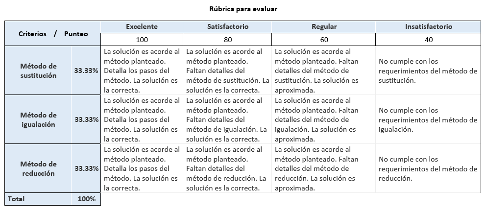

Sistema de Ecuaciones Lineales
Evaluación
Pregunta Verdadero-Falso
Retroalimentación
Verdadero
Retroalimentación
Falso
Un sistema lineal puede tener un número ilimitado de variable.
Actividad de GeoGebra
Ejercicios evaluables
Esta actividad debe ser realizada en cualquier medio digital o impreso. DEBE adjuntar un archivo PDF sobre la plataforma MoodleCloud.
Resolver los siguientes ejercicios de sistema de ecuaciones lineales aplicando los siguientes métodos:
- Sustitución
- Igualación
- Reducción
1.

2.

3.

Recuerde que por cada ejercicio debe aplicar todos los métodos de resolución estudiados anteriormente.
IMPORTANTE: Una vez finalice las actividades suba el archivo de trabajo.
Rúbrica

Obra publicada con Licencia Creative Commons Reconocimiento Compartir igual 4.0